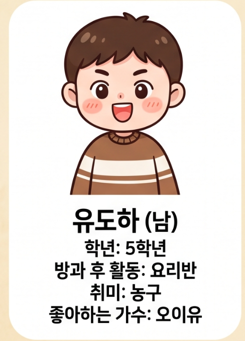
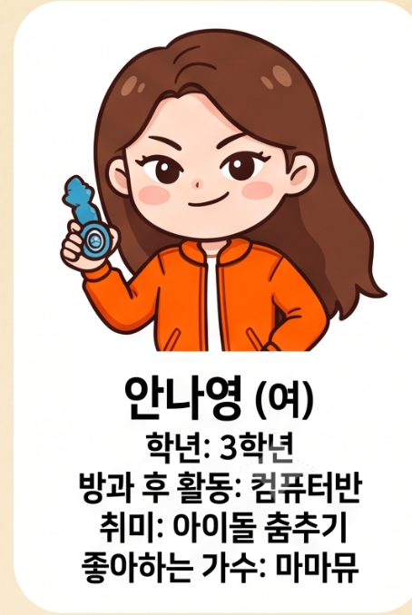

FIND THE CULPRIT
🕵️ 용의자 카드
14명의 친구 정보를 살펴보고, 조원들이 찾은 단서와 비교하여 범인을 추리해 보세요.
< 용의자 확인 방법 >
- 각자 맡은 힌트의 영어 증언을 해석합니다.
- 조원들과 핵심 단서를 공유합니다.
- 아래 용의자 카드의 정보와 단서를 비교합니다.
- 범인이라고 생각되는 학생을 정한 뒤 선생님께 확인받습니다.
용의자 14명


조원들과 단서를 모두 비교했다면 범인을 한 명으로 좁혀 보세요.
← 처음 화면으로